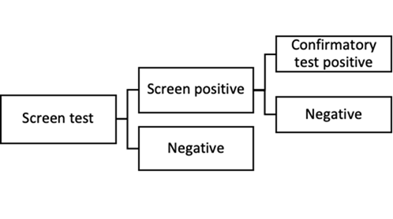

example.Rmd
We can load in a tree structure as a text file.
library(HEdtree)
Dx <- txt2tree('inst/Dx.txt')
Dx
#> levelName
#> 1 Screen test
#> 2 ¦--Screen positive
#> 3 ¦ ¦--Confirmatory test positive
#> 4 ¦ °--Negative
#> 5 °--NegativeTreatment tree version.
library(data.tree)
# create new tree objects
Tx <- Node$new('treated')
Tx$AddChild('Dies')
Tx$AddChild('Survives')
Tx$Dies$p <- 'cfr.tx'
Tx$Survives$p <- '1-cfr.tx'
print(Tx, "p")
#> levelName p
#> 1 treated
#> 2 ¦--Dies cfr.tx
#> 3 °--Survives 1-cfr.txNo treatment tree version.
noTx <- Node$new('untreated')
noTx$AddChild('Dies')
noTx$AddChild('Survives')
noTx$Dies$p <- 'cfr.notx'
noTx$Survives$p <- '1-cfr.notx'
print(noTx, "p")
#> levelName p
#> 1 untreated
#> 2 ¦--Dies cfr.notx
#> 3 °--Survives 1-cfr.notxCombine the base tree and the subtrees.
## merge on outcomes
MergeByName(rootnode = Dx, nodetoadd = Tx, nodename = 'Confirmatory test positive')
MergeByName(rootnode = Dx, nodetoadd = noTx, nodename = 'Negative')
print(Dx,'p')
#> levelName p
#> 1 Screen test
#> 2 ¦--Screen positive
#> 3 ¦ ¦--Confirmatory test positive
#> 4 ¦ ¦ ¦--Dies cfr.tx
#> 5 ¦ ¦ °--Survives 1-cfr.tx
#> 6 ¦ °--Negative
#> 7 ¦ ¦--Dies cfr.notx
#> 8 ¦ °--Survives 1-cfr.notx
#> 9 °--Negative
#> 10 ¦--Dies cfr.notx
#> 11 °--Survives 1-cfr.notx
## example of setting by grep:
## check
Dx$Set(check=1)
Dx$Set(check=0, filterFun=function(x) length(x$children)>0)
## deaths
Dx$Set(deaths=0)
Dx$Set(deaths=1, filterFun=function(x) (x$name=='Dies'))
print(Dx,'deaths','check')
#> levelName deaths check
#> 1 Screen test 0 0
#> 2 ¦--Screen positive 0 0
#> 3 ¦ ¦--Confirmatory test positive 0 0
#> 4 ¦ ¦ ¦--Dies 1 1
#> 5 ¦ ¦ °--Survives 0 1
#> 6 ¦ °--Negative 0 0
#> 7 ¦ ¦--Dies 1 1
#> 8 ¦ °--Survives 0 1
#> 9 °--Negative 0 0
#> 10 ¦--Dies 1 1
#> 11 °--Survives 0 1Example of using CSV I/O to set labels.
# tree2file(Dx,
# filename = here::here('inst/Dx0.csv'),
# 'p','check','deaths','treatments')
## read in and set labels
CD <- read.csv(here::here('inst/Dx1.csv')) #the edited version
## want to do automatically
## LabelFromData <- function(tree,data){
## ## TODO
## }
Dx$Set(p=CD$p)
Dx$Set(treatments=CD$treatments)
print(Dx,'p','treatments','deaths')
#> levelName p treatments deaths
#> 1 Screen test 1 0 0
#> 2 ¦--Screen positive p.screen 0 0
#> 3 ¦ ¦--Confirmatory test positive p.test 1 0
#> 4 ¦ ¦ ¦--Dies cfr.tx 0 1
#> 5 ¦ ¦ °--Survives 1-cfr.tx 0 0
#> 6 ¦ °--Negative 1-p.test 0 0
#> 7 ¦ ¦--Dies cfr.notx 0 1
#> 8 ¦ °--Survives 1-cfr.notx 0 0
#> 9 °--Negative 1-p.screen 0 0
#> 10 ¦--Dies cfr.notx 0 1
#> 11 °--Survives 1-cfr.notx 0 0
## make tree functions
qnts <- c('p','check','deaths','treatments')
tree_fns <- makeTfuns(Dx, qnt=qnts)
str(tree_fns)
#> List of 4
#> $ pfun :function (dat)
#> ..- attr(*, "srcref")= 'srcref' int [1:8] 16 32 16 62 32 62 274 274
#> .. ..- attr(*, "srcfile")=Classes 'srcfilealias', 'srcfile' <environment: 0x000001dcdaa20218>
#> $ checkfun :function (dat)
#> ..- attr(*, "srcref")= 'srcref' int [1:8] 16 32 16 62 32 62 274 274
#> .. ..- attr(*, "srcfile")=Classes 'srcfilealias', 'srcfile' <environment: 0x000001dcdaa20218>
#> $ deathsfun :function (dat)
#> ..- attr(*, "srcref")= 'srcref' int [1:8] 16 32 16 62 32 62 274 274
#> .. ..- attr(*, "srcfile")=Classes 'srcfilealias', 'srcfile' <environment: 0x000001dcdaa20218>
#> $ treatmentsfun:function (dat)
#> ..- attr(*, "srcref")= 'srcref' int [1:8] 16 32 16 62 32 62 274 274
#> .. ..- attr(*, "srcfile")=Classes 'srcfilealias', 'srcfile' <environment: 0x000001dcdaa20218>\[ c_0 + p_{screen} (c_{screen} + p_{test} (c_{test} + CFR_{Tx} c_{CFR} + (1 - CFR_{Tx})c_{nCFR})) \cdots \]
## quantity example
getAQ(Dx, 'deaths')
#> [1] "0+(p.screen)*(0+(p.test)*(0+(cfr.tx)*(1)+(1-cfr.tx)*(0))+(1-p.test)*(0+(cfr.notx)*(1)+(1-cfr.notx)*(0)))+(1-p.screen)*(0+(cfr.notx)*(1)+(1-cfr.notx)*(0))"
## get the variables
(pmz <- showAllParmz(Dx))
#> [1] "cfr.tx" "p.test" "cfr.notx" "p.screen"
##TODO: wheres this function?
## make test data
# test <- makeTestData(100,pmz)
# head(test)
#
# tree_fns$checkfun(test)
dat <-
data.frame(
p.screen = 1,
p.test = 1,
cfr.tx = 1,
cfr.notx = 1)
tree_fns[[1]](dat)
#> [1] 4
## run all
test <- appendResults(dat, tree_fns)
#> Calculating answers for: check
#> Calculating answers for: deaths
#> Calculating answers for: treatments
#> Done!
head(test)
#> p.screen p.test cfr.tx cfr.notx check deaths treatments
#> 1 1 1 1 1 1 1 1